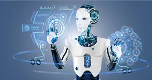

Robotic process automation is a form of business process automation technology based on metaphorical software robots or on artificial intelligence /digital worker. Automation and Robotics engineering is a field of engineering that deals with the design and creation of robots. They use computers to manipulate and process robotic actions. These robots are then used in: – Industries to speed up the manufacturing process. -The field of nuclear science.

Robotics and automation – the history – the second part of the article on RPA history. We look at the present and we glance towards its promising future. While the technology was growing for a while before, the development of the expression “robotic process automation” can be dated back to early 2000. RPA is a growing technology. However, it depends on artificial intelligence technology, screen scraping, and work flow automation. Robotics and automation elevate these technologies to a higher level, advancing their capabilities at a significantly improved manner. Robotics and automation are also built on artificial intelligence. Deloitte suggests that RPA is the combination of artificial intelligence and automation: “Robotic Process Automation (RPA), a synonym to AI, is the use of technologies allowing the employees in a company to configure computer software or a ‘robot’ to reason, collect and extract information, identify patterns, learn and adapt to new situations or environments.”
Automation is the process of using physical machines, computer software and other technologies to perform tasks that are usually.
Robotics is the process of designing, creating and using robots to perform a certain task. Used in automation, but many robot are not created for automation.
Here are some examples that illustrate the difference: When a customer writer to a bank’s support team, a chat bot replies, requests additional information and asks the customer to leave feedback at the end of the conversion. This is automation with no robotics involved.
A robot put together a car on an assembly line at a car factory.
A company provides robot pets for elders who are lonely and have low budgets.
The four type of robots every manufacturer should know
Articulated robots
SCARA robots
Delta robots
Cartesian robots
1)Retail – The retail industry involves lots of processes that are prime for automation with robotic process automation.
2)Banking – In spite of recent digital innovations, the bank sector is still known for its lengthy processes around information input and exchange.
3)Insurance- Lengthy, multi-step claims processes and document industry a prime use case for RPA.
4)Councils and local authorities
Human resources Automatic systems and robots
Robots can be considered as the most advanced automatic systems and robotics, as a technique and scientific discipline, can be considered as the evolution of automation with interdisciplinary integration with other technological fields.
An automatic system can be defined as a system which is able to repeat specific operations generally with a low degree of intellectual and manipulative levels, but that can be easily programmed in agreement with demands of productivity.
It is worthy of note that an automatic system is generally able to perform one operation for which its mechanical structure has been designed. Aspects of flexibility depend on the possibility of reprogramming the control unit, which is generally able only to Modify the time sequence of the designed operations.
Therefore, an automatic system of industrial type can be thought of as composed of two parts:
Hardware with mechanical, electrical, pneumatic, and hydraulic components that Provide the mechanical capability to perform an a priori-determined operation of Movement and/or manipulation;
Control and operation counterpart with electronic components and software that provide the capability of autonomy and flexibility to the working of the system.